Lamsenspitze
Northeast Ridge (Grade IV)
--Office Space
Here is a little video of a helicopter that flew by below us while Danno was climbing on the ridge. In a higher resolution you can see him on the ridge because of the red helmet. Hard to see in this low-resolution, though, sorry!
As we readied our packs at the car, I wondered what I was thinking. Bringing your boss on a mountain climb? Don’t we go to the mountains to get away from work? And what if I say something stupid, perhaps revealing new, vast regions of ignorance that I’d previously papered over with a thin plaster solution of buzzwords? Hmm…this could be one of my riskier ascents!
If Dan harbored similar, opposing worries he kept them to himself. “What if Michael, displaying great heroism and elan, saves my life, and yet I have to turn down the raise he’s asking for?” he might have been thinking. Or maybe, imagining the interior thoughts of your supervisor is a fools game. As Dan later told me, his primary thought was “He’d better not get me killed!”
It all started the way most plans end. Over the years lots of friends from work or elsewhere have said, “hey, I’d like to go along sometime, you make it sound fun!” But reason quickly returns and these good valley friends become busy with spring cleaning, car cleaning or returning that gas grill to Target. However, Dan was different. Weeks later, he brought it up again, knowing the season would end soon. Drat! Why must I make loud lunchtime conversation about the jet stream and high pressure and the lowering snowline? But I guess he’s serious.
Gulp.
I chose a climb and we found a free day. Dan would carry the rack, and I’d have the rope. My old rock shoes would fit him well enough. We’d go climb the Lamsenspitze via the Northeast Ridge. It’s very easy, but pretty long. I thought it’d be the perfect way to introduce a keen beginner to alpine rock climbing.
On the drive out we had a “meeting of the minds” that made me sure we’d have a perfect day. We both agree that radio in Germany is, sorry, just plain awful. I had a cache of Kexp.org podcasts on my iPod, and Dan reveled in every song, just as I’d been doing for the past year. Cool!
We started hiking at 9 am, pretty late for would-be alpinists, but of course us old hands are like frogs in the boiling pot of water: we would have jumped out of this game immediately if we knew we’d be getting up at 3 am every Saturday! So we took it easy, and bemusedly swam upstream through dozens of day trippers young and old. On the way up I told frightening tales of “maximum fall factors,” the vagueries of placing protection and I tried to look weathered and haunted when remembering an unplanned bivy. Somewhere on the switchbacks above the lovely Gramaialm, I asserted that the only thing that could worry me today was crowding on the route, with the attendent falling stones. “But I’m sure all these people will thin out, heading for various hiking destinations,” I intoned confidently.
As we sat on the terrace of the Lamsenjochhuette eating “second breakfast” and drinking something cool, we were dismayed to see dozens of people removing helmets and harnesses from their packs. “What was all that you said about the dangers of crowding, Michael?” said Dan. I must have turned white, because he quickly reassured me that they were going to the Klettersteig. With palpable relief I agreed. “Ah yes. I knew that, of course.”
“Apfelstruedel makes me sleepy,” I complained, slowing down on the sunny switchbacks above the hut. We both saw a helmeted pair high above on the route, seemingly not moving on the cliff during the 30 minute hike. “I’m sure we could pass those guys,” I quipped.
The route starts in a little Klettergarden, and we watched a fellow working on a grade VI sport climb as we roped up. Trying to impart everything necessary for a first multipitch climb, I checked Dan’s knot and belay technique. A couple waited nearby, planning to climb the route behind us. They looked a little scandalized at our impromptu lesson, perhaps wishing they’d hiked faster to get ahead of us! No matter, I practically seethed confidence as I swaggered up to the grade IV+ slab that starts the route. “A baby still in his mother’s womb could climb this!” I laughed. But after a few minutes of tentative pawing, I was still at the bottom of the slab. “Uh…been a while, you know how that is!”
Hmm. This was…hard! Being forced to consider the possibility of falling so early in the climb was humbling. “Try to the left,” advised the waiting couple. “I hope I’m still seething confidence,” I thought as I simpered to the left and shakily palmed an arete to a palsied mantel move that gained the top of the slap. “There!” I beamed, then happily exited around the corner. I imagined the skeptical gaze of Dan and the couple shaking their heads with mild disgust.
Getting lost on a rubbly face was my next worry. Finally I saw a cemented bolt and could belay Dan up. He arrived quickly, not only passing the slab nicely, but also leaving all the loose rocks above in place. Another lesson in anchoring in, which we repeated 30 feet above when I stumbled across the real anchor for the pitch.
We followed a few more easy pitches naturally up and slightly left. These were Grade II/III, and had no protection between belay stations. Then Dan helped me figure out a confusing section. The vague topo seemed to indicate an easy leftward trending line. But directly above, 2 bolts protected a much steeper line on a featured wall. I got the o.k. from Dan to try it, though he remembered that this was where the party was stuck for 45 minutes while we hiked up. The climbing was surprisingly moderate for the angle, aided by little ledges along the way. “Woo, this is fun, Dan!” I said, finally realizing I was with a climbing partner and friend, as opposed to someone I have to impress. On this pitch I had my moment where everything falls away but the handholds in front of you and the distance above your last protection. Dan enjoyed it too, excited by how steep it was and yet doable as well. From this point we couldn’t stop grinning.
“Yeah!” I said, snapping a perfect photo looking across and down at the belay, where Dan strove to look suitably heroic. The valley spread out behind us, dominated by the rock walls of Sonnjoch above the Gramaialm. The pitches followed regularly, and the Lamsenjochhuette got smaller and smaller. Sometimes loose rocks were a concern. We cringed if we knocked a pebble off. However, we were well ahead of the couple behind us, and Dan had gotten his belay and anchoring system down. We kept to the standard belay stations, making pitches between 25 and 40 meters. On a steeper Grade IV pitch, Dan watched me perform a lieback move to get over a smooth bulge, then executed it well when it was his turn. We discussed how it’s interesting and kind of scary that you just have to commit to the moves and do them, trusting that you’ll find a rest for hands and feet above.
Dan got another initiation into alpine climbing on the next pitch. I was creeping up over some breakable corners beneath a yellow tower when the unsettling drone of rockfall surrounded me. “FELS!” I yelled, and ducked my head into the wall, trying to hide beneath my helmet. I briefly saw Dan do the same, quick as lightning. A volley of rocks came down from the chimney I was about to climb, and I prayed for it to taper off. A small rock hit my shoulder and another made a satisfying “crack!” on my helmet. I visualized the party above us, wondering if they knew they’d knocked rocks off and could therefore stop? But it did stop quickly, and we were unharmed. “Jeez!” I said. Now I had to climb the chimney and hope nothing else came down while I was in the line of fire. Despite the feeling of rolling dice, it was an enjoyable chimney pitch. I told Dan to try and stay on the outside and not get “sucked in” to the black inner chimney, where you’d trade maneuverability for (false) security. “Chimney climbing is a lost art in this day and age,” I mused conventionally.
We’d reached a nice little notch or scharte. “We could sleep the night here!” I said, always happy to remind my partner about unplanned bivies and things like that. Another good pitch above followed a steep, solid watercourse with a few bolts. Feeling like we were beyond the hard stuff, I changed into tennis shoes, and we tied into the ledge to eat a sandwich and chocolate. It was a great place for lunch. Tiny specks moved on a trail that led across to the Eng valley, and the clear blue sky put us at ease. There was a slight chill in the air, it felt like summer was ending but a beautiful fall was going to begin. Dan laughed at how easily he’d adjusted to sitting on the edge of a cliff, feeling secure because of the rope tied into the anchor. “Too easily!” he worried aloud. We’d found a region of solitude, having climbed far ahead of the couple below. I played the old game of tracing lines on cliffs, trying to judge the difficulties. I saw steep, meadowy ridgetops in the distance and yearned to traverse them. We were in no hurry and it was a fine spot for a rest.
For the next pitch, which featured slabby moves protected by pitons I used most of the rope to pass a belay station and sling a solid block for an anchor just below the ridgecrest. From here we teetered on the crest for two nice pitches, then followed the ridge down and up through little towers to the false summit, marked by a cross. Dan led the last 30 feet to the summit, using the cross as a belay anchor…resourceful!
From here we traveled “in coils,” keeping all but 15 feet of rope coiled around our chests, and mostly walking on loose rocks of the southern side of the ridge. A short section of rock climbing below the true summit gave us no trouble, though we did have to pass a party struggling with two horribly tangled ropes. Dan led the last bit to the summit again, a little nerve-wracked by my improvised gear belay (I brought two cams, and I was gonna use them at least one time!). He climbed right on the ridge crest to the top, and was relieved to have made it up without getting killed even once!
A solemn summit handshake, and we could admire the 360 degree view of the Karwendel and Brandenberg mountains. We could see part of the beautiful meadows at the head of the Eng valley. Without a map, we couldn’t do much to name summits, but the cliffs of Sonnjoch had imprinted that peak on our brain. We saw the broad Inn river valley flowing towards Innsbruck, and knew that in a depression between snowy peaks the Brenner Pass was carrying traffic into Italy.
Going down was uneventful. We kept our harnesses on in case we needed to clip into the Klettersteig path. There were little traffic jams going down a steep ridge, and we’d wait on the side of the “iron rope” sometimes until they let up. Finally we got down to a trail in the scree and walked to the notch that would allow us to follow trail under the east face back to where we’d stashed our hiking poles. Picking these up, we kept on to the Lamsenjochhuette where a drink of water was enough to fuel us the rest of the way. It was worthwhile to admire the peak and our line for a few minutes while we rested our feet. We reached the car somewhere around 7 pm, happy with the day and nursing tired feet.
So my advice is to take your boss climbing. Just like you, he also wants to go to the mountains and forget about the workaday world for a while. It was great fun to share the experience of the high and wild, and gain a new “partner in crime.” Heh heh!!
|
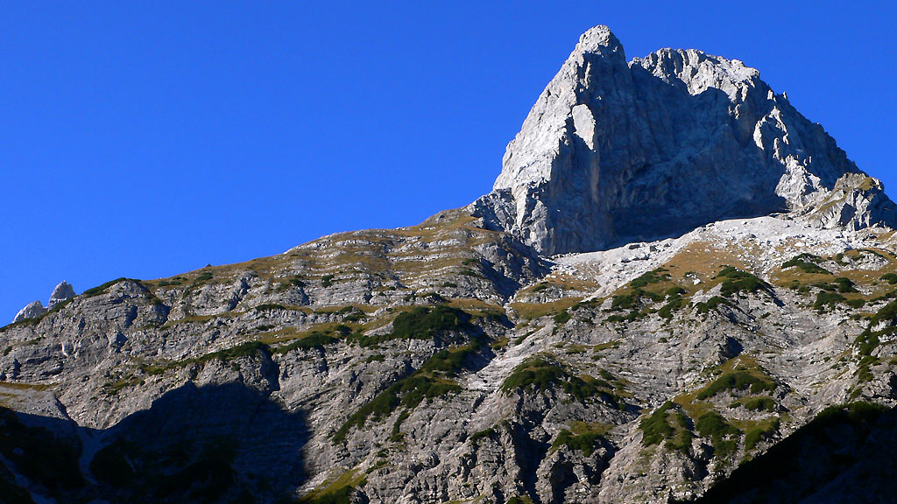 The Lamsenspitze from the Gramaialm, with the Northeast Ridge directly in front. |
|
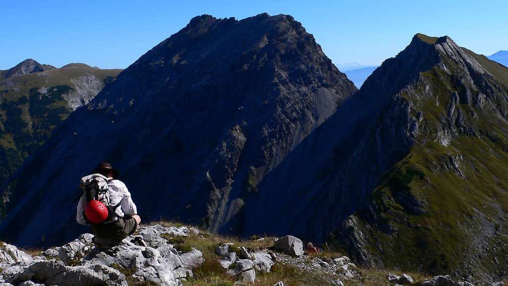 Resting on the approach trail above the Lamsenjoch. |
|
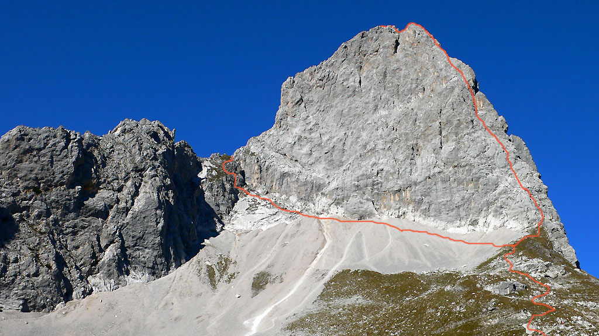 The Northeast Ridge follows the right skyline. |
|
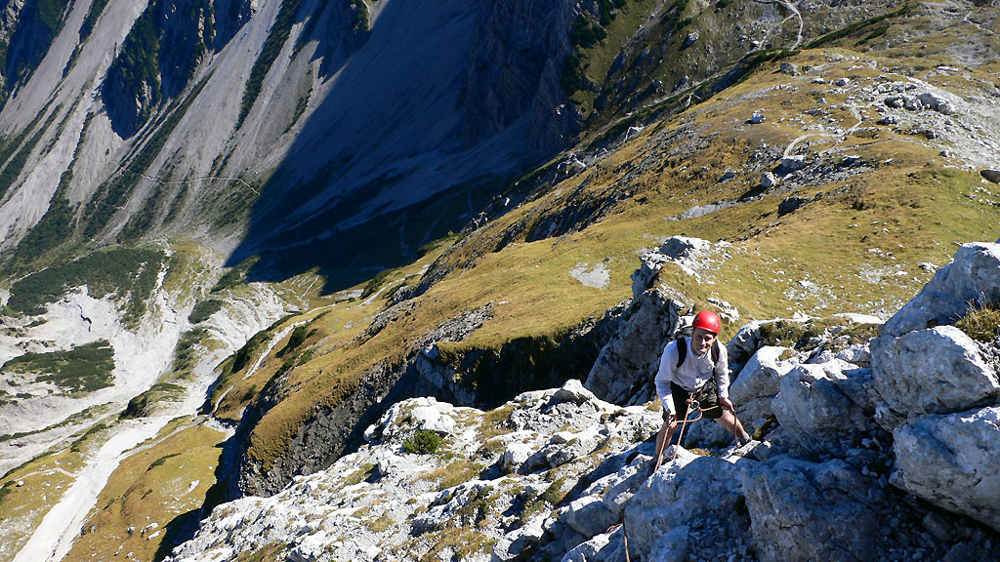 Dan on the second pitch of the Northeast Ridge |
|
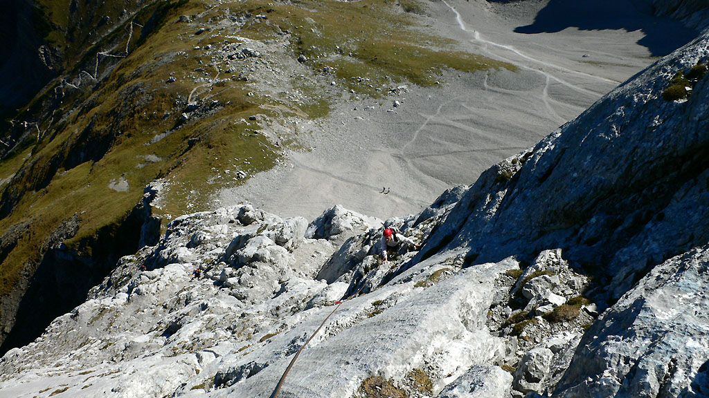 Solid and enjoyable climbing on the ridge. |
|
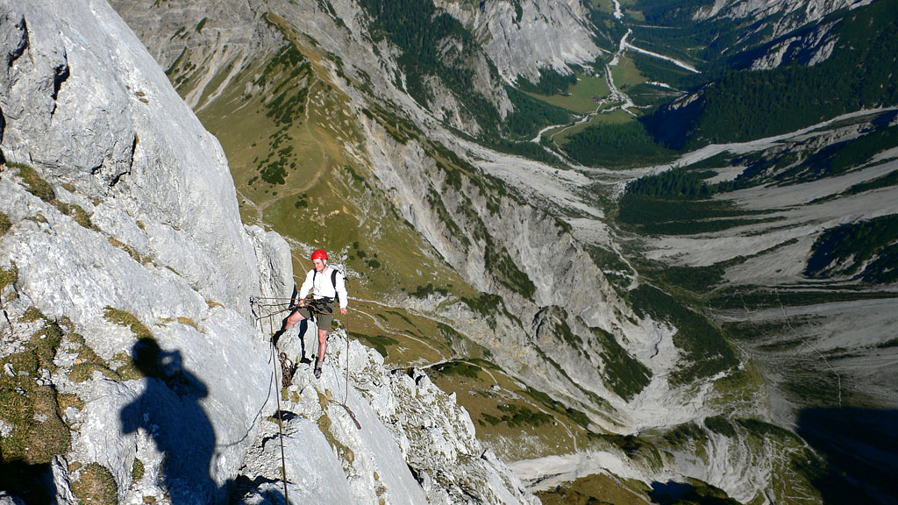 Dan enjoying the views. |
|
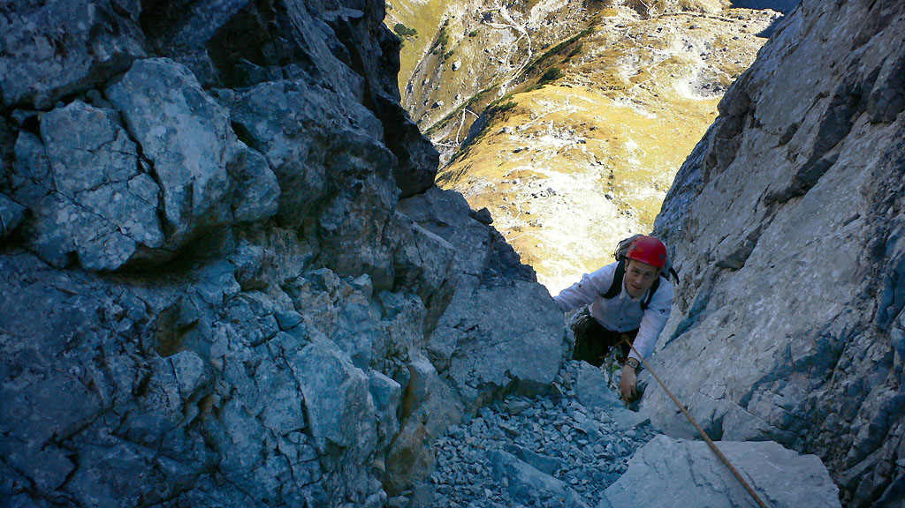 Following the fun chimney pitch. |
|
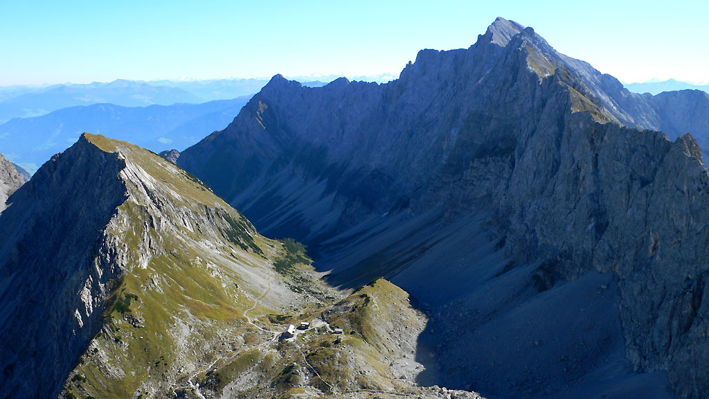 The grandiose view down to the Lamsenjochhuette. |
|
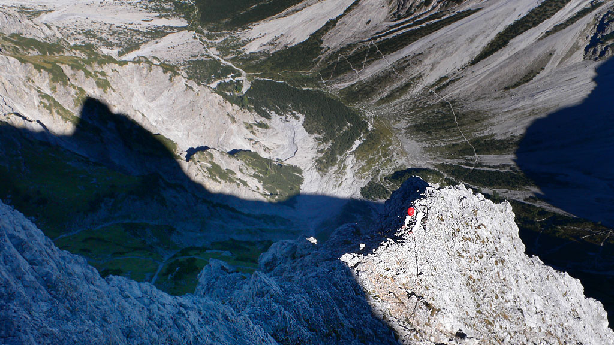 Right on the crest below the false summit. |
|
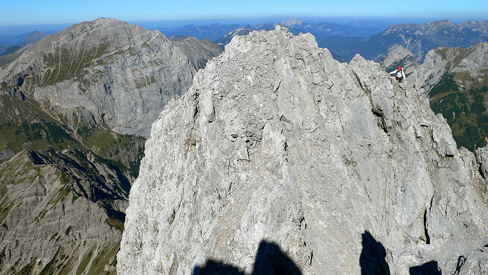 Dan approaching the first false summit. |
|
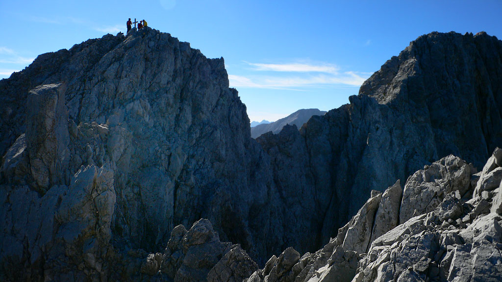 The 2nd false summit (left) and the true summit (right). |
|
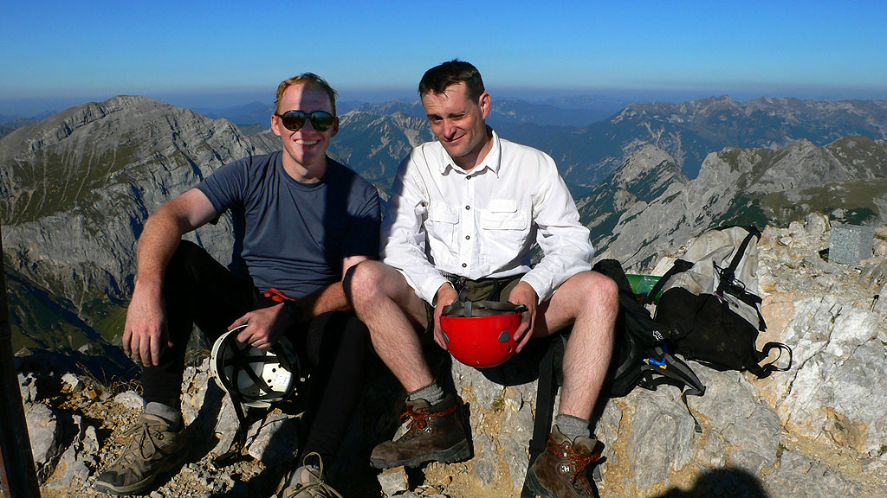 Michael and Dan on the summit. |
|
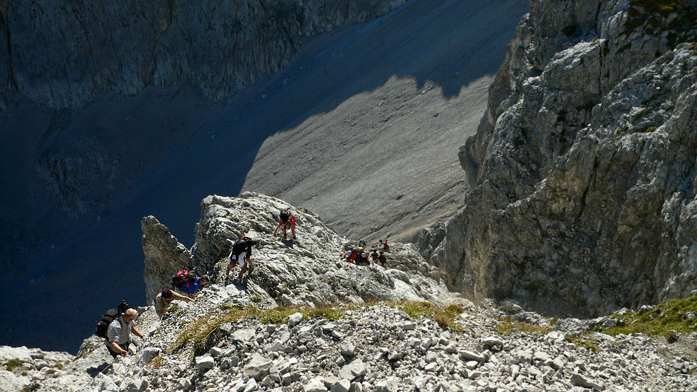 The Klettersteig is still crowded at 4:30 pm. |
|
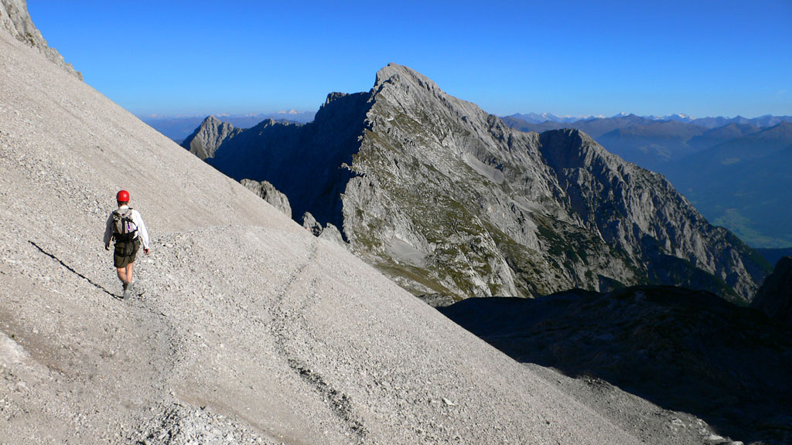 A scree trail on the descent. |
|
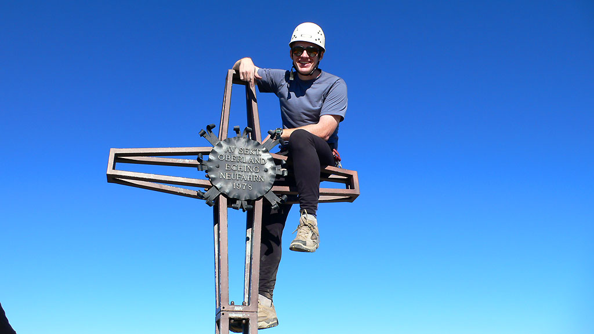 Now this is the true summit! |
{kind=link}
{kind=link}
{kind=link}
{kind=link}
{kind=link}
{kind=link}
{kind=link}
{kind=link}
{kind=link}
{kind=link}
{kind=link}
{kind=link}
{kind=link}
{kind=link}
{kind=link}